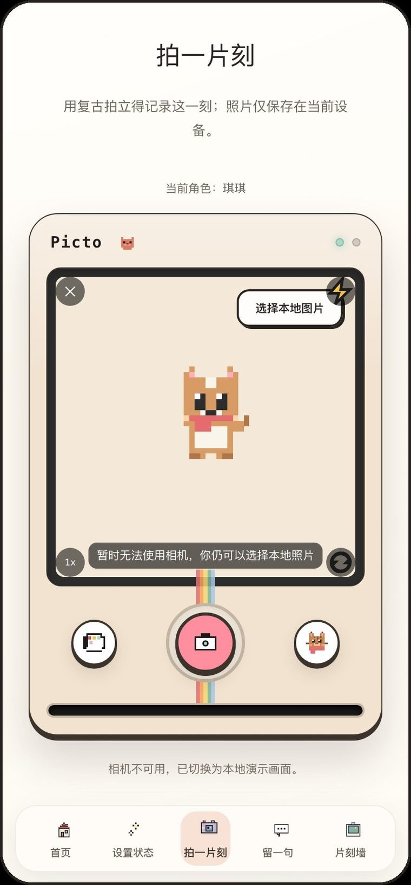
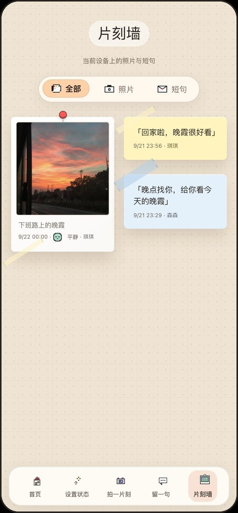
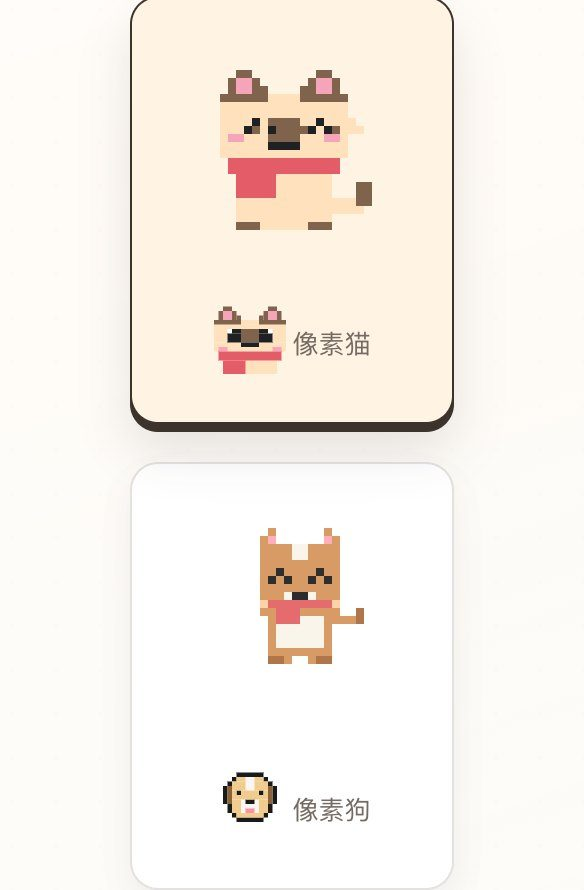
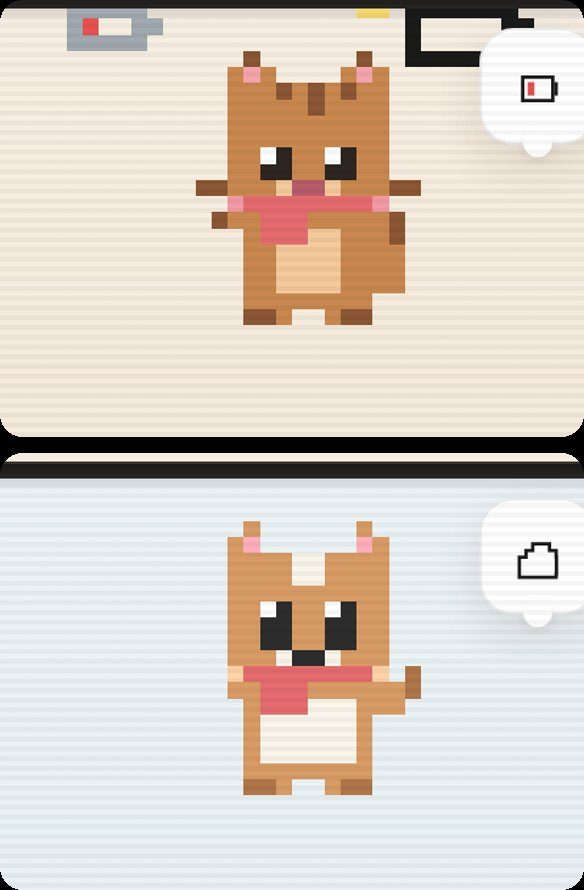

Picto 片刻 · 02 / 03
Picto 片刻 · 02 / 03
看见彼此，
不必一直聊天。
介于沉默与即时聊天之间的低打扰陪伴方式：先表达“我现在怎样”，再决定要不要说话。
TL;DR · 30 秒速览
Problem · 问题
即时通信把“被看见”绑成了“要回复”，忙碌和异地的情侣因此更累。
My role · 我的角色
约 2 个月独立完成：问题定义、状态机制、语言边界与最终取舍；AI 协作完成实现与测试。
Key decision · 关键判断
用一张状态卡代替一条消息：心情 + 正在做 + 联系偏好；用可预测的规则，而非生成式 AI。
Outcome · 结果
可解释的状态系统、六步双角色闭环与可运行原型；通过 21 项逻辑测试与 23 项主流程断言。
问题
情侣想要的是“被想起”，
不是“被要求回复”。
桌面研究里反复出现同一个张力：关系需要持续的在场感，但现有工具把“在场”和“回复义务”绑在一起。
来源：Huang & Yao, 2024, JSPR, N=50；中国青年报社会调查中心, 2016, N=2001。为已发表研究数据，非本项目调研。
洞察
拆开“表达、看见、回应”，
让它们不必同时发生。
“我想让你知道我此刻怎样，但不一定想开启一段对话。”
Design hypothesis · 设计起点，不把个人经验包装成用户研究结论
前人研究给了三个启示
极简信号也能承载亲密
异地情侣只能互相发送“一比特”点击，却会结合情境读出丰富含义。→ 状态不必写成长消息。
已读回执制造压力
接收方感到必须回复，发送方则期待即时回应。→ 不做在线、已读与送达回执。
回应仍然重要
更频繁、回应性更强的联系与更高的关系满意度相关。→ 回应可以轻到一句“我看见了”。
原则
三个原则，约束所有功能与表达。
看见，不等于打扰。
状态先于消息，让关心可以停在“我知道了”。
不回应，也被允许。
联系偏好直接可见，不用让沉默承担解释成本。
温柔，但操作必须清楚。
情感留给标题与角色，按钮和反馈直接说明结果。
功能语言和情感语言分开：每个词都对应真实能力
说明这是同一浏览器里的角色模拟。
只呈现用户主动表达的状态与边界。
反馈与真实存储范围完全一致。
规则是刻意的选择：为什么现在不用生成式 AI
可预测
同样的选择，永远得到同样的状态句。
不代替表达
情绪由本人选择，系统不推断、不放大。
留在本地
心情与活动不上传，不需要账号。
设计
“智能”来自可解释的状态映射。
心情 10 种 × 正在做 12 种 × 联系偏好 4 档。心情决定表情，活动决定场景，偏好把边界直接说出来。试着在左边换一组，看右边伴侣看到什么。
现在的我
正在为 琪琪 更新 · 仅保存在当前设备
「回家啦，晚霞很好看」
琪琪现在有点累，正在休息充电。
看见就好，不必开启聊天。
更新于 刚刚
留一句
- 现在留在首页 · 3 小时
- 到期退出首页，不把关心变成长期提醒
- 之后和照片一起，按时间进入片刻墙
Flow · 六步双角色交接
从表达，到看见，
再到留存。
- 表达当下心情、活动与联系偏好。
- 状态代理像素姿态与状态句同步更新。
- 切换视角同一设备模拟两端。
- 看见对方姿态、状态句与边界。
- 轻量回应短句时长可选。
- 留下片刻照片与短句进入片刻墙；相机不可用时改用本地图片，流程不中断。
Original screens · 原型截图


迭代与结果
四次关键迭代，让作品更诚实。
不再暗示没有实现的在线与电量。
两列排布，保存按钮不再遮挡选项。
明确时长只控制首页显示。


- 角色程序像素角色成为唯一基准，应用、头像与封面共用同一套造型。
- 语言能力不再被夸大：“在线、已送达”改为“当前设备、切换角色查看”。
- 流程分散的页面整合为六步双角色交接，表达、看见、回应、接收形成闭环。
- 展示冗长的过程说明，换成真实界面和可交互的案例页。
已完成的工程验收
工程验收说明原型能稳定运行，不等于用户验证；真实使用效果见下一步的日记研究计划。
反思
让亲密关系里的“此刻”，先被看见。
低打扰也有代价：三个风险要提前回应
状态替代了聊天
看到“一切如常”，就不再主动说话。→ 状态只是开场，首页始终保留“留一句”的入口。
在场变成监视
持续共享位置、步数，会让一方觉得被盯着。→ 只显示本人主动选择的状态，不采集定位、步数或在线时间。
又多一个要看的 App
功能一多，它就成了另一个消息箱。→ 只做两个人、三件事：状态、短句、片刻。
应对为当前设计取舍，尚待真实用户验证。
下一步：用一周日记研究验证三个假设
招募 3–5 对异地或忙碌的情侣，使用原型 7 天，前后各做一次半结构化访谈。
| 假设 | 方法 | 观测指标 |
|---|---|---|
| H1 低打扰表达能降低回复压力 | 每日日记 + 前后访谈 | 回复压力自评（1–7） |
| H2 联系偏好比在线状态更有用 | 日记 + 使用记录 | 偏好设置与查看频次 |
| H3 能区分首页时效与片刻墙 | 可用性任务 | 任务完成率与误解次数 |